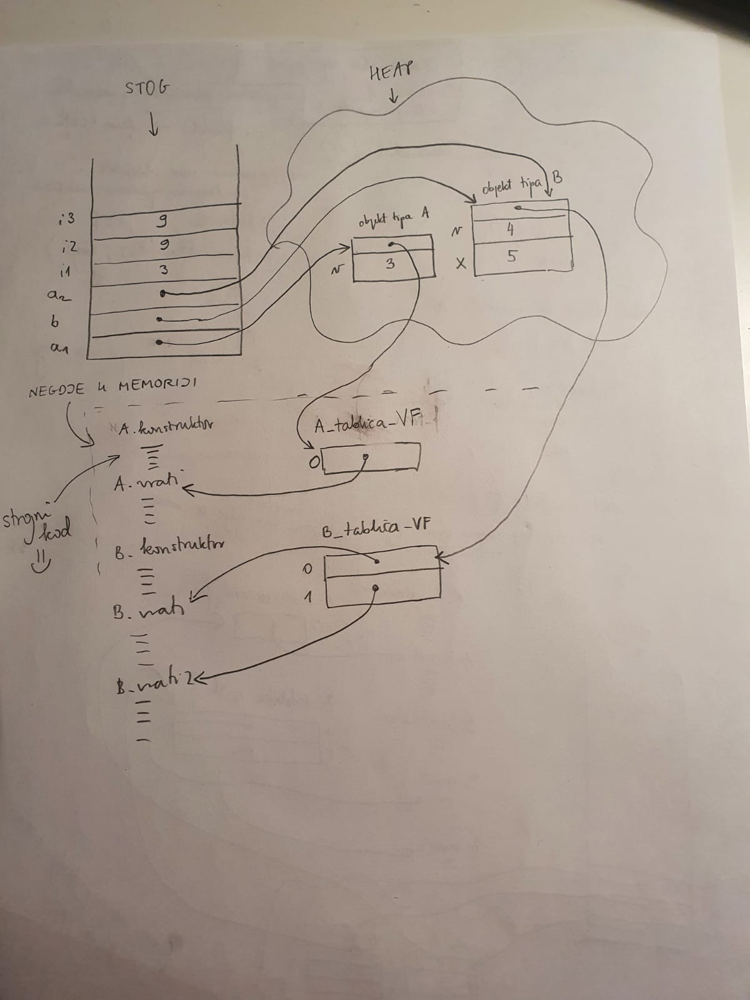

tomekbeli420 Slažem se s kolegom da mi je to što je Čupić pričao izgledalo dosta bitno pa evo recap za one koji nisu bili. Ako sam nešto krivo skužio/pogriješio/zaboravio, nadopunite me 🙂.
Za početak, kod koji se koristio za demonstraciju:
Razred A:
public class A {
int v;
A(int v) {
this.v = v;
}
int vrati() {
return v;
}}
Razred B:
public class B extends A{
int x;
public B(int v, int x) {
super(v);
this.x = x;
}
int vrati() {
return x + super.vrati();
}
int vrati2() {
return x+5;
}}
Main:
public class Main {
public static void main(String[] args) {
A a1 = new A(3);
B b = new B(4, 5);
A a2 = b;
int i1 = a1.vrati();
int i2 = b.vrati();
int i3 = a2.vrati();
System.out.println("i1=" + i1 + "\ni2=" + i2 + "\ni3="+i3);
}}
E sad nas zanima stanje u memoriji kada se ovo prevede. Nastaje strojni kod konstruktora i (virtualnih - u Javi su to sve metode) metoda klasa A i B, te nastaju tablice virtualnih funkcija koje sadrže pokazivače na taj kod. (pogledajte sliku na dnu).
Sad kreće izvođenje metode main pa idemo redom:
A a1 = new A(3) stvara referencu a1 na stogu, alocira se objekt tipa A na heapu - on sadrži pokazivač na tablicu virtualnih funkcija i mjesto za člansku varijablu v te se zatim poziva konstruktor. “Ispod haube” konstruktor A(3) se poziva kao A(this, 3) tj. šalje se i referenca na stvoreni objekt na heapu. Ako sam dobro shvatio, Čupić je rekao da se u Javi automatski poveže alocirani objekt s pripadnom tablicom virtualnih funkcija, dok u C++-u se na početku konstruktora konceptualno poziva nešto tipa: this->tablica = &tablica_od_A pa treba paziti ako se koriste virtualne funkcije u konstruktoru jer može doći do neočekivanog ponašanja.
B b = new B(4, 5) stvara referencu b na stogu, alocira objekt tipa B na heapu - on sadrži pokazivač na tablicu virtualnih funkcija razreda B, mjesto za člansku varijablu v te mjesto za člansku varijablu x. Napomena je bila da je bitan memorijski “layout” tj. da ako razred B nasljeđuje razred A, da on u memoriji gledano s početka izgleda kao A, a onda na kraju se dodaju stvari specifične za B.
Konačno, A a2 = b stvara referencu a2 na stogu i ona pokazuje na već stvoreni objekt tipa B.
I sada, ako ste skužili ove tablice virtualnih funkcija, ne bi vam trebao bit problem vidjet kako će izgledati pozivi funkcija vrati u mainu:
- a1 pokazuje na objekt tipa A, pogleda se u tablicu VF i nade se metoda vrati razreda A, pozove se i vrati se vrijednost varijable v tj.
i1 = 3.
- b pokazuje na objekt tipa B, pogleda se u tablicu VF i nade se metoda vrati razreda B, pozove se i vrati se vrijednost
x + super.vrati(). Ovdje mala napomena da ovo super.vrati() nije polimorfni poziv već je ključna riječ super uputa prevoditelju da izvede direktno metodu nadrazreda (zna točno gdje se nalazi u memoriji). Dakle, rezultat je i2=9.
- Zadnji poziv je onaj gdje vidite jeste li shvatili kako ovo funkcionira, dakle a2 je referenca na tip A, ali pokazuje na objekt koji je zapravo tipa B. Vi ga gledate kao tip A, dakle ne možete pozvat npr a2.vrati2(), ali on je i dalje stvarno tipa B te će se pogledati u njegovu tablicu virtualnih funkcija, pronaći implementacija metode vrati razreda B i rezultat je ponovo
i3 = 9.
Slika stanja u memoriji:

Mislim da je to sve, nadam se da pomaže 🙂